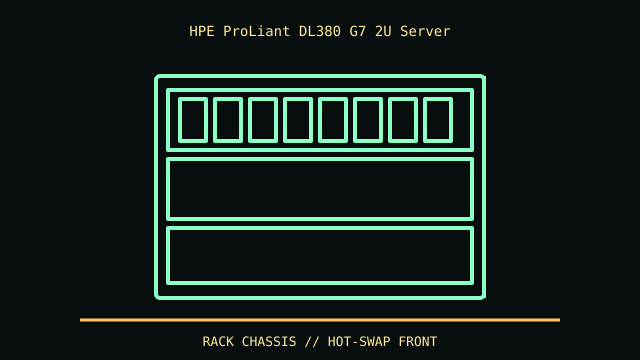

[ IDENTIFIED ENCLOSURE // HP PROLIANT DL380 GENERATION 7 (G7) ]
HPE ProLiant DL380 G7 2U Server
87.3 × 446 × 692 mm (H × W × D) approximately; 2U rack chassis, installation depth depends on bezel, rails and cable arm.

REVISION / FIT CAVEAT: DL380 G7 is not G6/G8 and 8/16 SFF/LFF cages are separate configurations. Read product ID label and Smart Array/backplane part numbers.
Model-specific mechanical record
| Catalog leaf | Rack server enclosures |
|---|---|
| Identity / generation | HP ProLiant DL380 Generation 7 (G7) |
| Dimensions / clearance | 87.3 × 446 × 692 mm (H × W × D) approximately; 2U rack chassis, installation depth depends on bezel, rails and cable arm. |
| Drive bays / mounts | Front configurations include 8 SFF or 16 SFF hot-plug 2.5-inch drive cages; an 8 LFF 3.5-inch variant is also documented. 16-SFF layout has different controller/optical-drive options. |
| Board / chassis compatibility | HP-specific system board, Smart Array controller/backplane, risers and rail kit. Card fit and drive protocol depend on riser/backplane/controller combination. |
| Revision identification | DL380 G7 is not G6/G8 and 8/16 SFF/LFF cages are separate configurations. Read product ID label and Smart Array/backplane part numbers. |
Compatibility and preservation
HP-specific system board, Smart Array controller/backplane, risers and rail kit. Card fit and drive protocol depend on riser/backplane/controller combination.
Keep drive carriers paired with slots; preserve fan cage, air baffle and rail kit. Hot-plug labels do not imply drives can be changed without observing controller/RAID and service procedure.
Before transfer or restoration, photograph the complete model label, assembly/board revisions, bay/backplane identifiers and included accessories. Measure the actual specimen when planning installation or shipping; nominal envelope figures may exclude protruding feet, rails, doors or cables.
Manufacturer manuals and archival sources
- HPE QuickSpecs portal — DL380 G7 archived specificationModel-specific manufacturer specification, service manual, or technical reference used for the listed dimensions and mechanical configuration.
- HP ProLiant DL380 G7 QuickSpecs archival scan — ManualsLibSupplemental model documentation or institutional/technical archival record; use the exact product code and manual revision for a specimen.
Listings distinguish base configuration from optional drive, PSU, fan, rack and accessory kits. Do not combine maximum capacities if cages or components occupy the same volume.